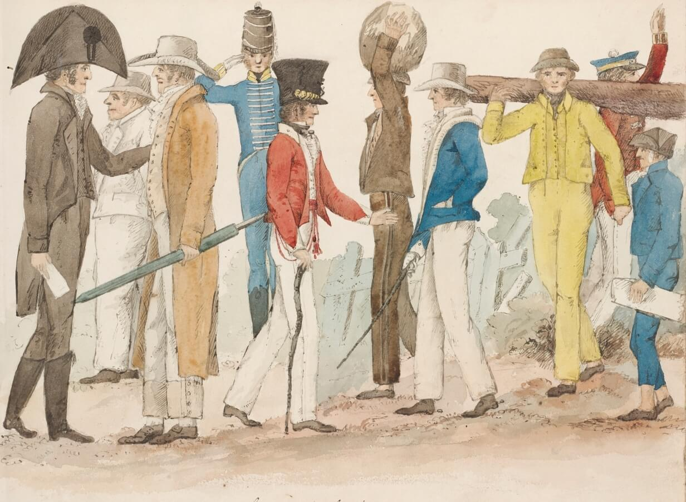

<div class="h-100 d-flex justify-content-center bg-orange">
    <div class="all-width min-height d-flex flex-column">
        <div class="position-relative mx-auto p-0 flex-grow-1 container-for-scroll screen-size d-flex flex-column">
            <div class="page-14 flex-grow-1">
                <div class="d-flex align-items-center user pt-5">
                    <h2 class="culper-ring__texts__title m-0 bg-black tree-title orange-text d-flex flex-wrap">
                        <span class="blue-after-line d-inline-block position-relative border-bottom-line-orange">Effects</span>
                        &nbsp;
                        <span class="blue-after-line d-inline-block position-relative border-bottom-line-orange">of</span>
                        &nbsp;
                        <span class="border-bottom-line d-inline-block position-relative mig border-bottom-line-orange">Mig</span>
                        <span class="blue-after-line d-inline-block position-relative mig border-bottom-line-orange">ration</span>
                    </h2>
                    <button id="page_26_audio_play" type="button"
                            class="border-0 bg-transparent user__img overflow-hidden flex-shrink-0"
                            data-toggle="tooltip" data-placement="bottom"
                            title="Click the professor to hear his commentary on the period">
                        
                    </button>
                    <audio muted autoplay>
                        <source src="../assets/img/audio-video/jiemba04.mp3" type="audio/mpeg">
                    </audio>
                </div>
                <p>
                    Relations between the settlers and the natives over the course of the first half
                    century after the arrival of the First Fleet was marked by escalating tensions and
                    increasing violence. As the settlers spread out of the original colonies, more land
                    was grabbed, speeding up the deterioration in relations between the two groups.
                </p>
                <p class="culper-ring__texts__subDesc text-decoration-none">
                    The British had first hoped to ingratiate themselves with the natives and assimilate
                    them into the British culture (which they believed to be superior). The aim was to
                    use them to help work the newly-acquired land, despite the nomadic traditions of the
                    aborigines, as well as using them as translators to speed-up cooperation and
                    communication. Increasingly violent clashes curtailed these efforts.
                </p>
            </div>
            <div class="lines-arrows position-relative position-relative d-flex flex-column align-items-center justify-content-between">
                

                
                
                <div class="d-flex justify-content-end position-absolute lines-arrows-container w-auto">
                    <div class="d-flex align-items-center p-0 ml-auto mb-0">
                        <div class="dropdown show d-flex align-items-center">
                            <a
                                    class="rounded-circle tree-of-liberty__btn text-white border-0 d-flex align-items-center justify-content-center bg-white dropdown-toggle flex-shrink-0"
                                    href="#"
                                    role="button"
                                    id="pushPullFactors "
                                    data-toggle="dropdown"
                                    aria-haspopup="true"
                                    aria-expanded="false">
                            </a>
                            <div class="p-0 info position-relative transitionX-30">
                                <h3 class="m-0">Push & Pull<br/>Factors</h3>
                            </div>
                            <div
                                    class="dropdown-menu author"
                                    aria-labelledby="pushPullFactors">
                                <button class="btn bg-transparent border-0 shadow-none position-absolute close-sticky-modal p-0"
                                        type="button">
                                    <svg width="25" height="25" viewBox="0 0 60 60" fill="none"
                                         xmlns="http://www.w3.org/2000/svg">
                                        <path d="M33.3147 30.0001L59.3135 4.00115C60.2288 3.0858 60.2288 1.60174 59.3135 0.686512C58.3981 -0.22872 56.9141 -0.228837 55.9988 0.686512L29.9999 26.6854L4.00115 0.686512C3.0858 -0.228837 1.60174 -0.228837 0.686512 0.686512C-0.22872 1.60186 -0.228837 3.08592 0.686512 4.00115L26.6853 29.9999L0.686512 55.9988C-0.228837 56.9142 -0.228837 58.3983 0.686512 59.3135C1.14413 59.7711 1.74401 59.9998 2.34389 59.9998C2.94377 59.9998 3.54353 59.7711 4.00127 59.3135L29.9999 33.3147L55.9987 59.3135C56.4563 59.7711 57.0562 59.9998 57.6561 59.9998C58.256 59.9998 58.8558 59.7711 59.3135 59.3135C60.2288 58.3981 60.2288 56.9141 59.3135 55.9988L33.3147 30.0001Z"
                                              fill="#282828"/>
                                    </svg>
                                </button>
                                <div class="w-100 h-100 popup-container">
                                    
                                    <div class="d-flex flex-wrap align-items-end px-3">
                                        <p class="my-3 text-center">
                                            <small> Edward Charles Close, ‘The
                                                Costume of the Australasians’, in the New South Wales
                                                Sketchbook
                                                (ca.1825). This sketch by the engineer and magistrate Edward
                                                Charles Close gives a fantastic sense of the array of people
                                                that made up early colonial society in Australia. The
                                                uniforms
                                                here give a clear indication of the variety of social
                                                status,
                                                whilst the lack of women in Close’s sketch here is also
                                                notable.
                                            </small>
                                        </p>
                                        <ul class="list-unstyled">
                                            <li class="d-flex align-items-start">
                                                The European migration to and colonization of Australia can
                                                best
                                                be understood as a push-pull dynamic. On the one hand,
                                                conditions in Britain, and Europe more generally, encouraged
                                                certain groups of people to seek out newer pastures. They
                                                were
                                                pushed away from their native countries by the need for
                                                safety,
                                                acceptance, and the desire for something better. Of course,
                                                some
                                                – the convict colonizers – were forcibly pushed away! Their
                                                punishment was to be the first settlers in an entirely new
                                                world.
                                            </li>
                                            <li class="d-flex align-items-start mt-3">
                                                “However, the new lands discovered by Cook and his crew were
                                                also viewed as an opportunity. Some colonizers were pulled
                                                to
                                                the new land of Australia by the possibilities a new start
                                                offered. There was plenty of land for prospective farmers,
                                                natural resources – such as gold – to exploit, and the souls
                                                of
                                                natives to save. As much as some colonizers were sent
                                                against
                                                their will, it is important not to lose sight that the
                                                prospect
                                                of settling in a new world was a tantalizing offer for some
                                                in
                                                the 19th century European society.
                                            </li>
                                            <li class="d-flex align-items-start mt-3">
                                                The 19th century was one that was rapidly changing as
                                                industrialization, scientific discovery and social and
                                                political
                                                changes were all having profound repercussions on societies.
                                                The
                                                needs that drove people away from these societies, and
                                                likewise
                                                the opportunities that pulled other people towards them,
                                                need to
                                                be understood as one part of a complex dynamic of
                                                colonization.
                                            </li>
                                        </ul>
                                    </div>
                                </div>
                            </div>
                        </div>
                    </div>
                </div>
            </div>
            <div class="bottom-line">
                <div class="page-number from-bottom position-sticky text-center b-0 w-100">26</div>
            </div>
        </div>
    </div>
</div>